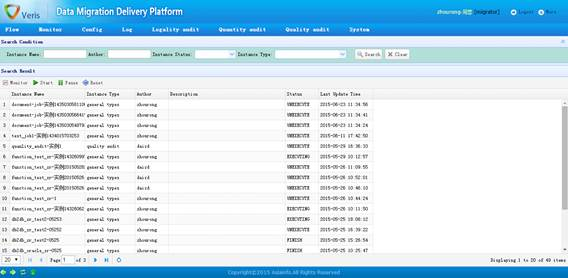
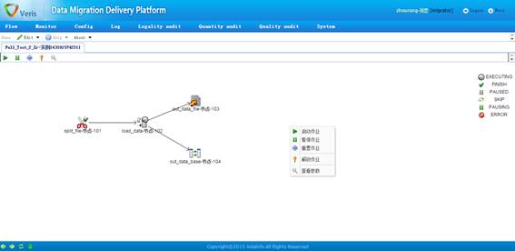
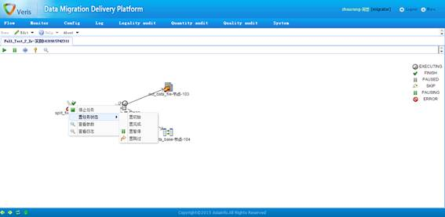

1、作业实例查询页面

作业实例查询页面
功能描述：
作业实例查询页面显示了当前所有作业实例的基本信息，用户可以在查询功能区中根据查询条件进行筛选。
2、作业实例执行监控页面

作业实例执行监控页面1
功能描述：
双击某个作业实例，或者选中某个作业实例后点击“Monitor”按钮，即可进入作业实例执行监控页面；在页面的空白处右键，即可对该作业实例进行“启动”、“暂停”、“重置”、“解锁”和“查看参数”操作；其中“重置”操作是指将作业实例初始化为可以执行的状态。
在作业实例执行监控页面中，在某个节点上右键，即可对该节点进行“停止”、“置任务状态”、“查看参数”和“查看日志”操作。

作业实例执行监控页面2